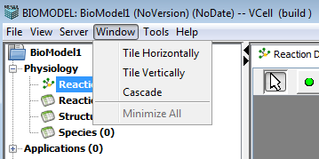

The Window menu bar option allows the user to arrange the open windows in the current VCell document.

Clicking the Window menu displays the available options to arrange the open windows in the current VCell document.